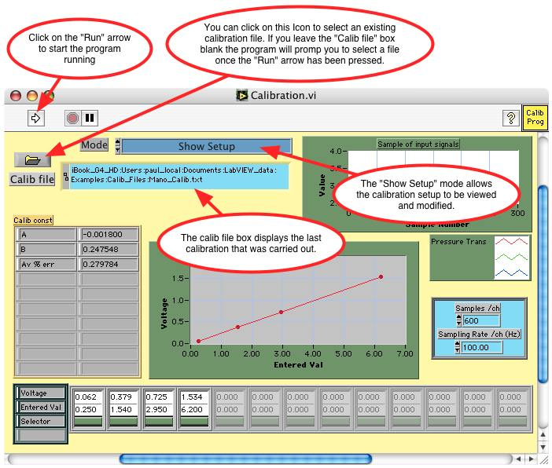
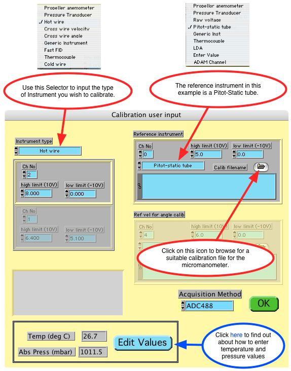
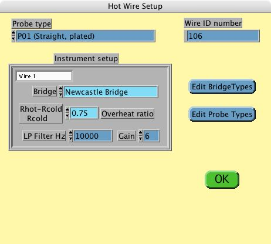
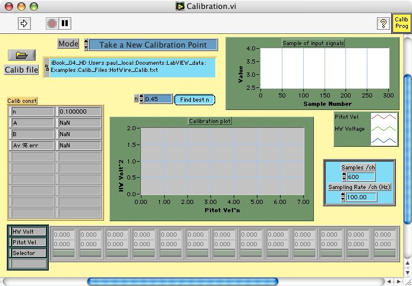
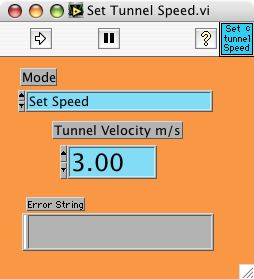
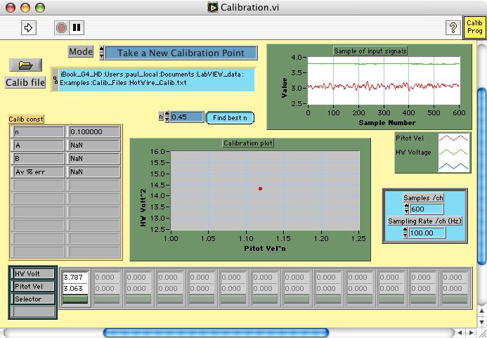
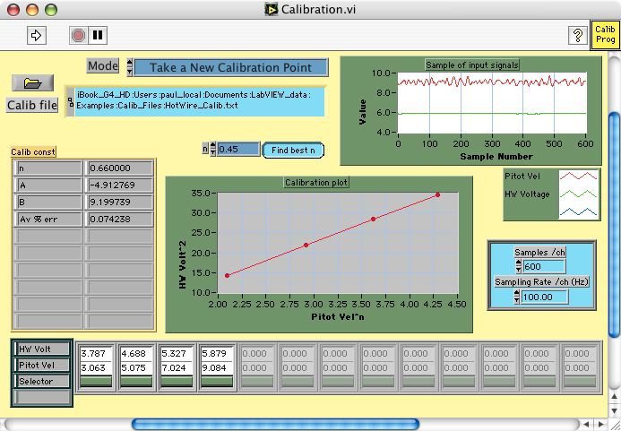
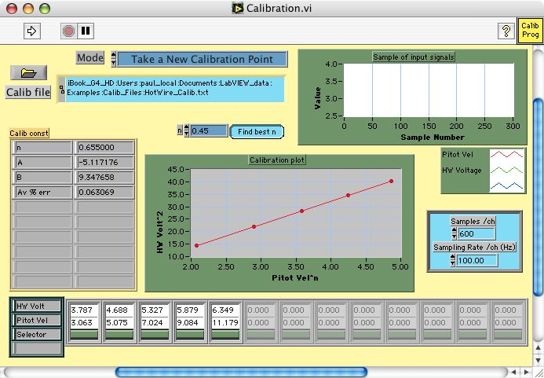

Step 1
The hot wire bridge must first be balanced for the desired probe and the bridge tested and adjusted to give optimal frequency response. The hot wire probe needs to be placed in a low turbulence flow along side the pitot static tube. In this example the hot wire signal is connected to Channel 2 of the ADC488 connection box and the signal from the micromanometer is connected to Channel 0.
Step 2
If LabVIEW is not running Launch it and open the EnFlo_Hub.vi as shown below

Click on the Calibration icon to open the calibration program.
Step 3
This is the Calibration.vi which should now be showing. It should have initialised itself to show the most recent calibration that has been carried out, or be blank if this is the first calibration carried out using Calibration.vi on this machine
Click on the Run arrow to show the calibration setup
Step 4
If the Calib file box on the Calibration.vi was left blank the file dialog will appear asking the user to choose a new or existing calibration file. The Calibration file created in this example is /Users/paul_local/Documents/LabVIEW_data/Examples/Calib_Files/HotWire_Calib.txt
The Calibration User input dialog should now be displayed
Enter the voltage limits for both the hot wire anemometer and micromanometer voltage outputs. This will enable the acquisition system to optimise the use of its A to D converter voltage range. The Temperature and Pressure inputs at the bottom of this panel are used to determine the air density (ρair) required in to calculate the fluid velocity from the pitot-static tube dynamic pressure (Pdyn).
Velocity = (2*Pdyn/ρair)0.5
The Acquisition Method used in this example is the ADC488 which is an external Analogue to Digital convertor having it own onboard memory and is linked to the computer via a GPIB interface.
Press the green OK button after having set this panel appropriately
Step 5
If the Calib Filename for the micromanometer (connected to the pitot-static tube) could not be found the user will be prompted to search for a suitable calibration file via the file dialog box.

The Calibration file chosen in this example is /Users/paul_local/Documents/LabVIEW_data/Examples/Calib_Files/Mano_Calib.txt created during the Micromanometer calibration.
Step 6
The Hot Wire Setup dialog should now be displayed
Press the green OK button after having set this panel appropriately
Step 7
Now all the setup dialogs have been answered the Calibration.vi should look like this
Before running the Calibration.vi the wind tunnel speed for the first calibration points needs to be set.
Step 8
If the wind tunnel you are working on has LabVIEW speed control, go to the EnFlo_Hub.vi and click on the icon Tunnel Speed Control in the User tab to launch the panel shown below, or manually control the tunnel speed
Type in the desired Tunnel Velocity m/s value and click on the Run arrow to set the tunnel speed
Step 9
Now click back on the Calibration.vi to make it the active window or select it from the LabVIEW Window menu bar
The only remaining values to set on Calibration.vi front panel are the number of samples Samples/ch and the sampling rate Sampling Rate /ch (Hz).
Click on the Run arrow when the tunnel velocity has settled at the first calibration value.
Step 10
When the Calibration.vi stops running the first calibration point should be displayed
The velocity trace from the pitot-static tube and the voltage trace from the hot wire anemometer are shown in the plot labelled Sample of input signals, and their average values are recorded in the lower array.
The calibration constants A, B and n are NaN (Not a Number) since these cannot be evaluated from just one calibration point
The time trace for each calibration point is saved in a separate Raw data file that can be view using Measurement.vi in its post processing mode.
Step 11
Now click back on the Set Tunnel Speed.vi to make it the active window or select it from the LabVIEW Window menu bar or change the tunnel speed manually

Type in the desired Tunnel Velocity m/s value and click on the Run arrow to set the tunnel speed
Step 12
Now click back on the Calibration.vi to make it the active window or select it from the LabVIEW Window menu bar
Click on the Run arrow to take the next calibration point after the pressure transducer has settled
Step 13
When the Calibration.vi stops running the first two calibration points should be displayed
The calibration constants A and B are now shown for the King's law fit for the equation E2 = A + BUn where E is the anemometer voltage, U is the fluid velocity and A, B and n are fitting coefficients.
The Av % err is the square root of the mean square error in velocity divided by the average velocity. Obviously for a two point calibration this value will be zero.
To add the next calibration point repeat Step 11 and Step 12 for a tunnel speed of 7m/s
Step 14
When the Calibration.vi stops running 3 calibration points should be displayed
To add the next calibration point repeat Step 11 and Step 12 for a tunnel speed of 9m/s
Step 15
When the Calibration.vi stops running 4 calibration points should be displayed
To add the next calibration point repeat Step 11 and Step 12 for a tunnel speed of 11m/s
The Calibration.vi displaying 5 calibration points is shown below
This would be considered a good hot wire calibration over the velocity range from 3m/s to 11m/s since the Av % err is 0.06% which is very low. For a reasonable calibration you would expect this value to be less than 1%.
The coefficients A, B and n stored in the calibration file can now be used by Measurement.vi to convert the hot wire voltage output to a reading of velocity using the equation
Velocity = [(E2 - A) / B]1/n
where E is the hot wire anemometer voltage output.